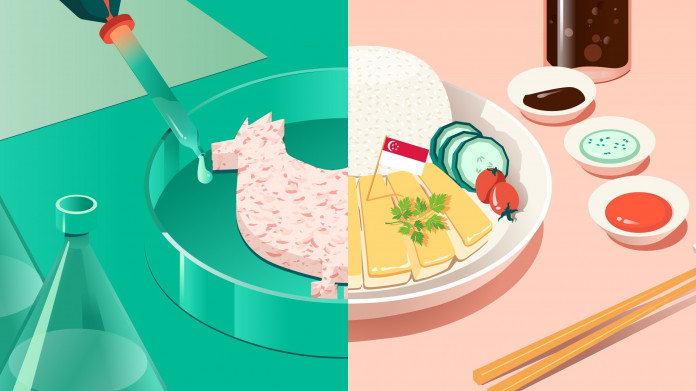

Cellular agriculture aims to provide people with the animal-based products they know and like, but with a lighter impact on the environment as well as numerous human health benefits and significant improvements in animal welfare.
These products are complementary to plant-based products as the target market is not vegans or vegetarians but those who find it challenging to exclude animal products from their diets.
